Dataset
From Kaggle, I downloaded the dataset for rainfall in India from 1901 to 2015, and filtered it to get data only for the city of New Delhi. Then, I made two time series for inital inspection: An annual one, and a monthly one. Since India a tropical country, rainfall is highly seasonal, so it makes sense to retain the monthly data.
library(data.table)
library(forecast)
library(ggplot2)
library(astsa)
rainIndia <- fread("https://raw.githubusercontent.com/malvikarajeev/misc/master/rainfall%20in%20india%201901-2015.csv")
rainDelhi <- rainIndia[SUBDIVISION == "HARYANA DELHI & CHANDIGARH"]
rainDelhi$total <- rowSums(rainDelhi[,c(3:14)])
rain_seasonal <- t(as.matrix(rainDelhi[,c(3:14)]))
rain_seasonal <- unlist(as.list(rain_seasonal))
rain_month <- as.data.frame(rain_seasonal)
names(rain_month) <- "rain"
delhiTs <- rainDelhi[,c(2,20)]
head(delhiTs)## YEAR total
## 1: 1901 390.2
## 2: 1902 419.7
## 3: 1903 428.9
## 4: 1904 527.5
## 5: 1905 322.8
## 6: 1906 593.7Now, to convert the data to a time series object in R.
Summary Statistics
rain <- ts(delhiTs$total, start = c(1901))
rainbymonth <- ts(rain_seasonal, start = c(1901), frequency = 12)
plot.ts(rain, main = "Rainfall by Year")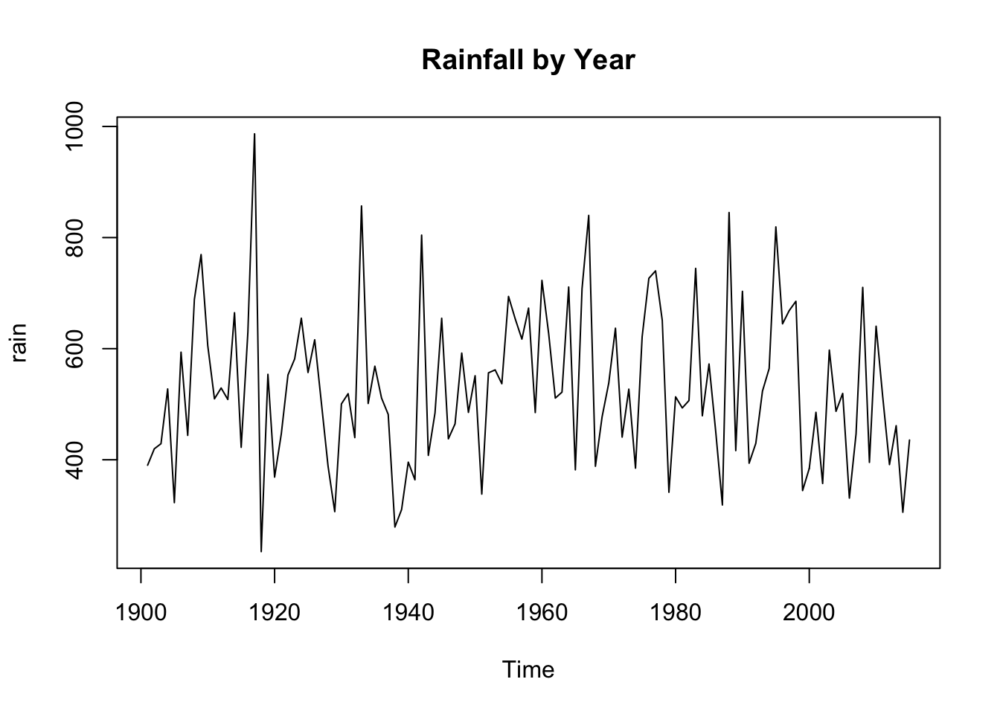
plot.ts(rainbymonth, main = "Rainfall by Month over the Years")
When we view the aggregate annual data, there does seem to be some random fluctuations over time, but they seem consistent. When we view the monthly data over the years, there is clearly a seasonal component. Therefore it becomes a time series with frequency of 12.
Comparing monthly mean rainfall
monthmean <- data.table(1:12)
monthmean$mean <- colMeans(rainDelhi[,3:14])
names(monthmean)[1] <- "month"
annualmean <- mean(rainbymonth)
ggplot() +
geom_line(data = monthmean, aes(x = month, y = mean)) +
geom_point(data = monthmean, aes(x = month, y = mean), color = "blue") +
geom_hline(yintercept = annualmean, linetype="dashed") +
labs(title = "Mean Monthly Rainfall", x = "Month", y = "Rainfall") +
theme_classic()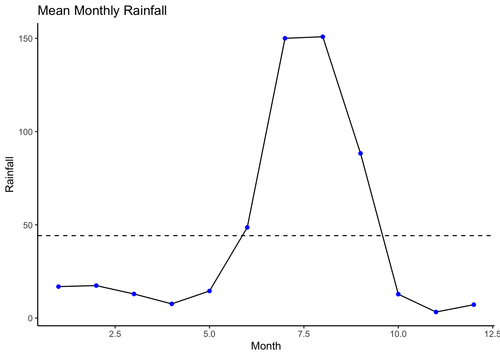
It is very clear that the months of July and June have a very high amount of rainfall, and so excluding theese two months, the rest of the months seem to have low variance around their mean. Monthly analysis of rainfall indicates that the region has very little or no change in non-monsoon months of January, February, March, November and December.
#Periodogram
spectrum(rainbymonth, log = "no")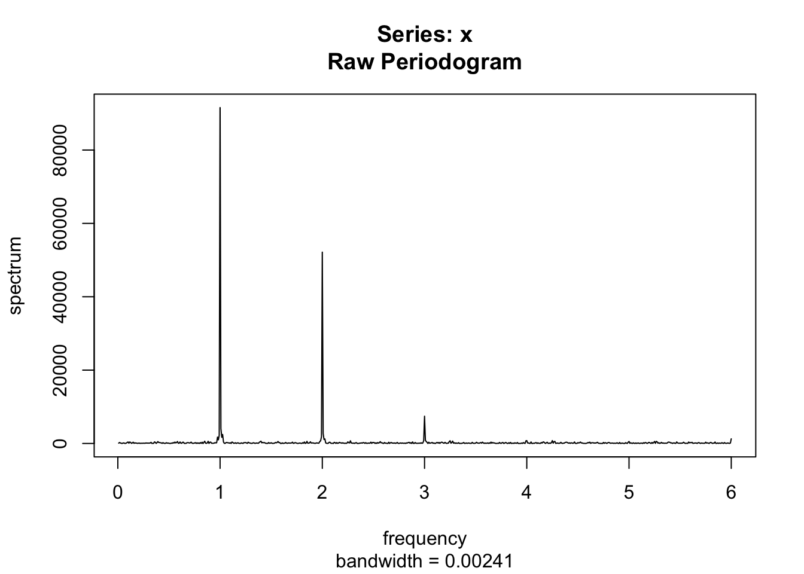
spectrum(rainDelhi$ANNUAL)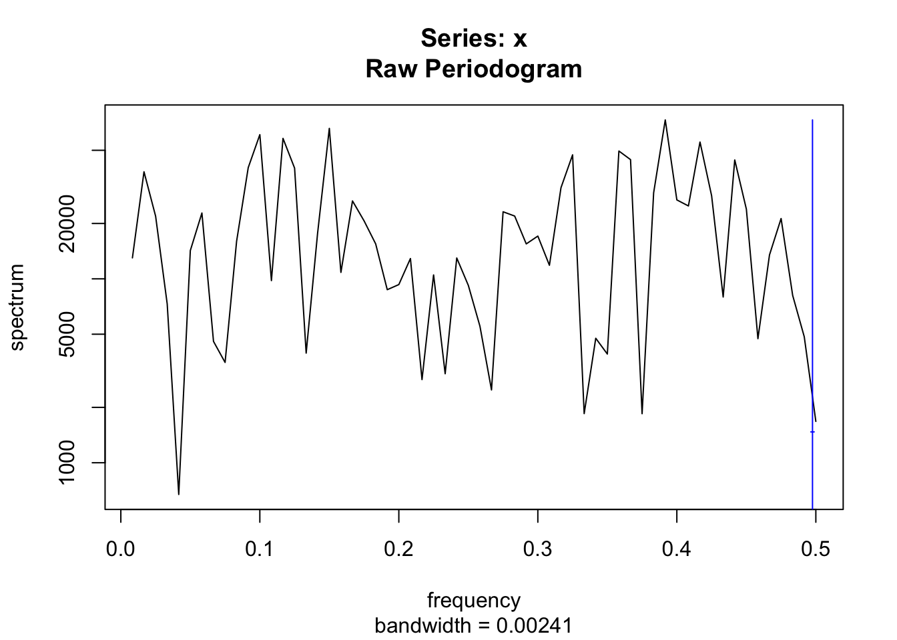
Generally speaking, if a time series appears to be smooth, then the values of the periodogram for low frequencies will be large relative to its other values and we will say that the data set has an excess of low frequency.
- If a time series has a strong sinusoidal signal for some frequency, then there will be a peak in the periodogram at that frequency.
- If a time series has a strong nonsinusoidal signal for some frequency, then there will be a peak in the periodogram at that frequency but also peaks at some multiples of that frequency. The first frequency (10 in this case) is called the fundamental frequency and the others called harmonics.
Smoothening
library(ggplot2)
rain_month$time_period <- seq(from = as.Date("1/1/1901", "%d/%m/%Y"), to = as.Date("31/12/2015", "%d/%m/%Y"), by = "month")
##SMOOTHENING: LOESS
decomp_2 <- ggplot(rain_month, aes(x = time_period, y = rain)) +
geom_line() +
geom_smooth(method = "loess", se = FALSE, span = 0.2, aes(colour = "h=0.2")) +
geom_smooth(method = "loess", se = FALSE, span = 0.4, aes(color = "h=0.4")) +
geom_smooth(method = "loess", se = FALSE, span = 0.6, aes(color = "h=0.6")) +
geom_smooth(method = "loess", se = FALSE, span = 0.8, aes(color = "h=0.8")) +
geom_smooth(method = "loess", se = FALSE, span = 1, aes(color = "h=1")) +
scale_colour_manual("",
breaks = c("h=0.2","h=0.4","h=0.6","h=0.8","h=1"),
values = c("red", "green", "blue","yellow","brown")) +
xlab(" ") +
labs(title="Different LOESS parameters") +
theme_classic()
decomp_2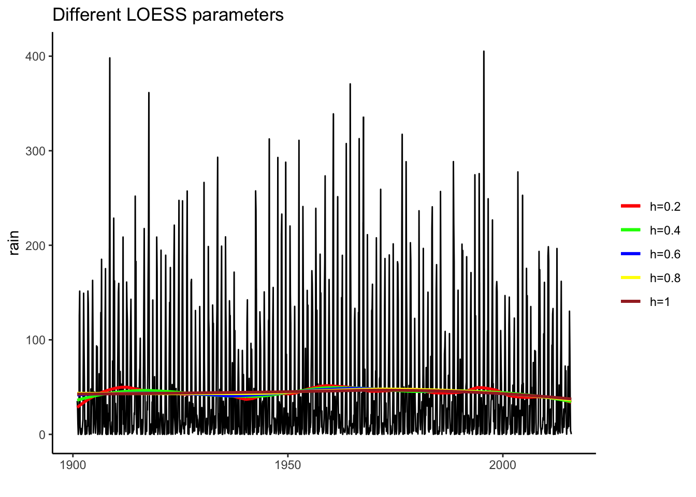
It is clear that LOESS smoothening is giving us a biased curve for all values of the parameter.
Is the Series Stationary?
Making a time series stationary is required to fit a seasonal ARIMA model. A stationary time series in one which the mean and variances level remains near-constant, and the choice of time origin doesn’t change the overall movement of the time series. A time series has a trend, seasonal, and random part. A seasonal part of this time series obviously exists. Now, to determine the trend part.
reg <- lm(ANNUAL ~ YEAR, rainDelhi)
rain_yearly <- ggplot(rainDelhi) +
geom_line(aes(x = YEAR, y = ANNUAL)) +
geom_abline(intercept = 646, slope = -0.059) +
theme_classic()
rain_yearly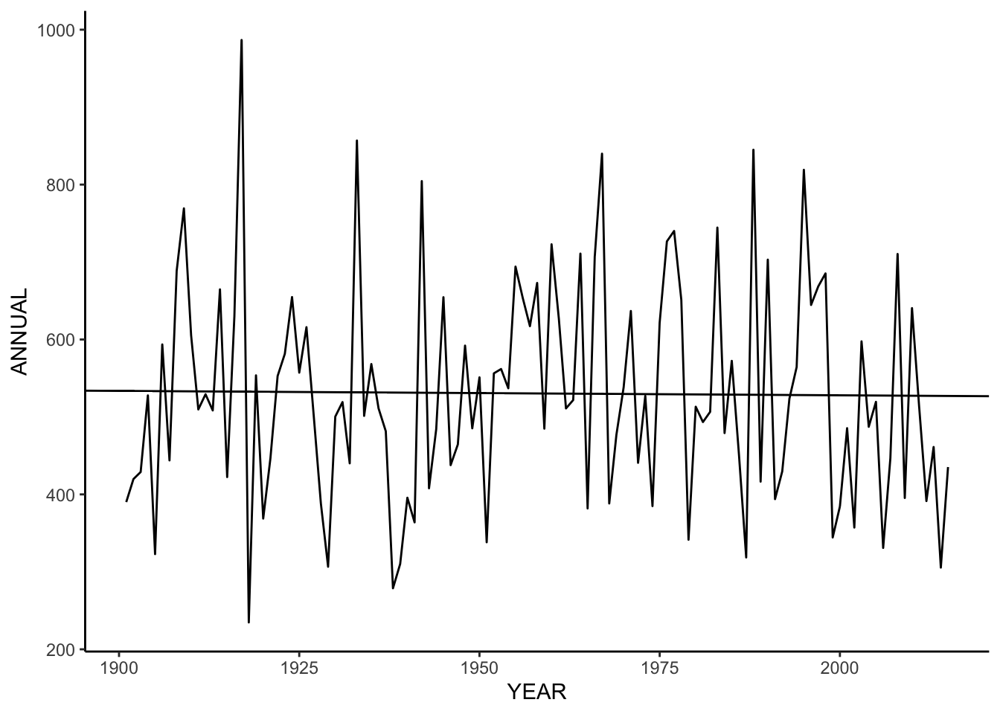
VARIANCE around mean is 20215.02. The slope of the annual time series is -0.5 mm / 10 years, giving about a decrease of aprx 6.8 in the time period from 1901 to 2015.
I used Kwiatkowski-Phillips-Schmidt-Shin (KPSS) to determine stationarity, and the Mann-Kendall test for monotonic trend detection.
library(trend)
library(tseries)
adf.test(rainbymonth)##
## Augmented Dickey-Fuller Test
##
## data: rainbymonth
## Dickey-Fuller = -9.2452, Lag order = 11, p-value = 0.01
## alternative hypothesis: stationarykpss.test(rainbymonth, null="Trend")$p.value## [1] 0.1kpss.test(rainbymonth, null="Level")$p.value## [1] 0.1#stationarise
rainComponents <- decompose(rainbymonth)
plot(rainComponents)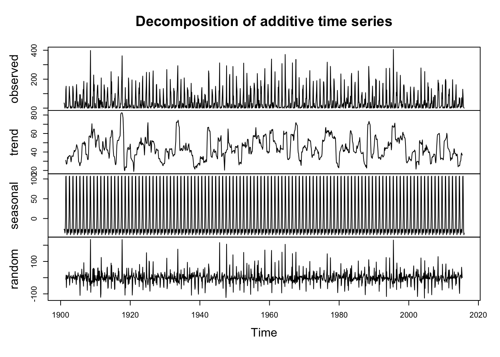
rain_stat <- rainbymonth - rainComponents$seasonal
plot(rain_stat, main = "monthy rain without seasonal component")
##kendal test for trend result, for annual rainfall and monthly.
library(trend)
kendall <- mk.test(rainDelhi$ANNUAL)
kendall$pvalg## [1] 0.8961508kendall2 <- mk.test(rainbymonth)
kendall2$pvalg## [1] 0.4752369cat("there there is no monotonic trend in the annual rainfall data") ## there there is no monotonic trend in the annual rainfall dataAfter performing the Ljung-Box test for stationarity, I concluded that the monthly rain data is not sufficiently stationary. So I subtracted the seasonal part. After that, the test yields an acceptable p-value.
boxtest <- Box.test(rainbymonth, lag = 12)
boxtest$p.value## [1] 0##stationarise time series by removing seasonal part
rain_stat <- rainbymonth - rainComponents$seasonal
Box.test(rain_stat, lag = 12, type = "Ljung-Box")##
## Box-Ljung test
##
## data: rain_stat
## X-squared = 18.167, df = 12, p-value = 0.1107Seasonal Differencing
The seasonal difference of a time series is the series of changes from one season to the next. For monthly data, in which there are 12 periods in a season, the seasonal difference of Y at period t is \(Y_t - Y_{t-12}\).
boxplot(rainbymonth~cycle(rainbymonth))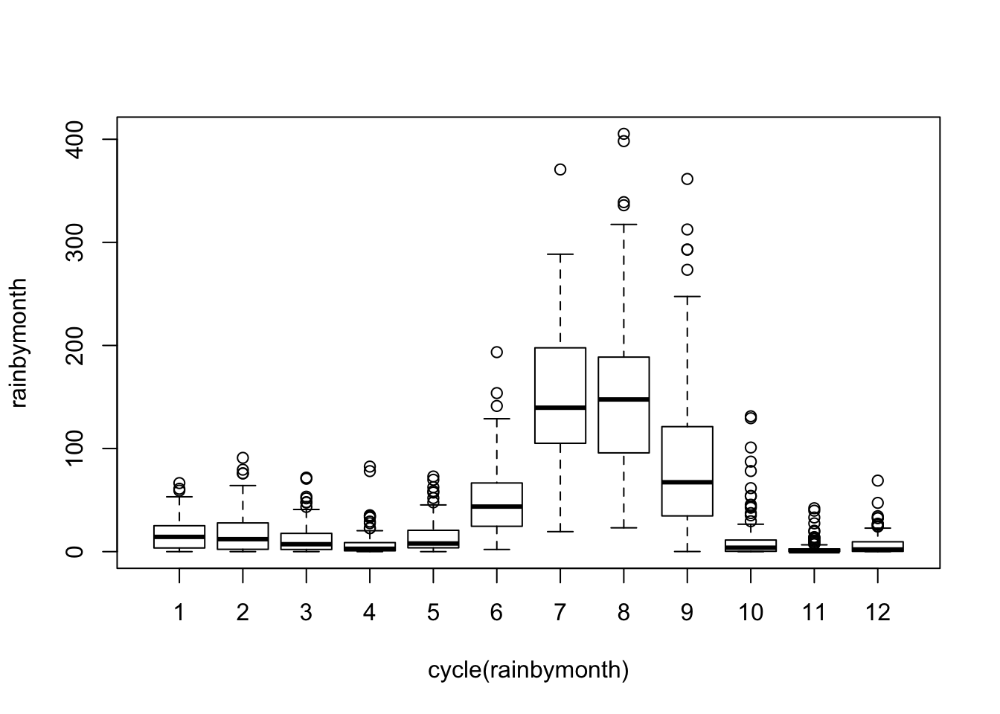
acf(rainbymonth)
pacf(rainbymonth)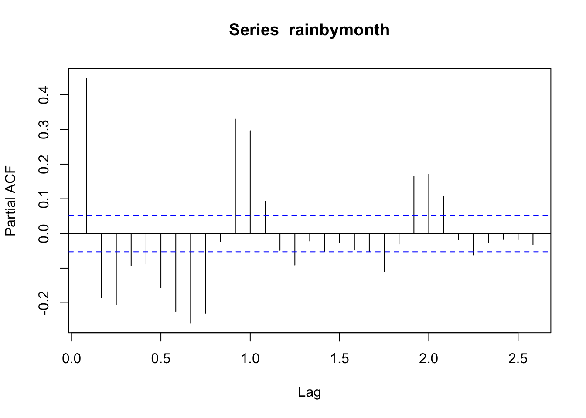
Seasonal effect becomes apparent. Even though the mean value of each month apart from the june and july is quite different their variance is small. Hence, we have strong seasonal effect with a cycle of 12 months or less. The time series data should be seasonally differenced, (due to a few spikes in both the ACF and PACF that cut the 95% confidence limits), by order D=1, in order to eliminate seasonality.
rain_ts <- rainbymonth
rainbymonth <- window(rain_ts, end = c(2004,12))
raincheck <- window(rain_ts, start = c(2005,1))
rain_diff <- diff(rainbymonth,36, difference = 1)
rain_stat_diff <- diff(rain_stat, 36, difference =1)
Acf(rain_diff, lag.max = 50, main = "ACF after seasonal differencing")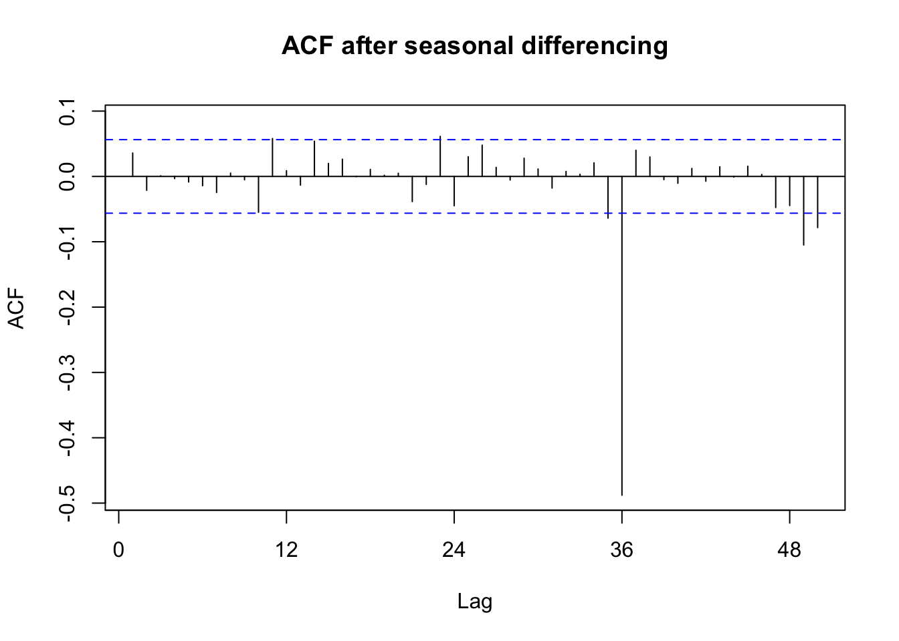
Pacf(rain_diff, lag.max = 50, main = "PACF after seasonal differencing")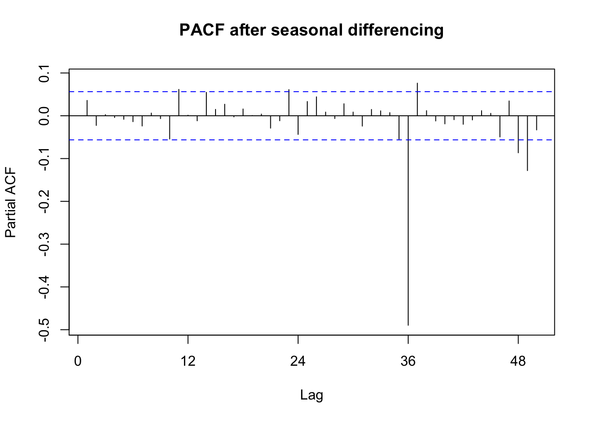
On inspection, it seems like a SARIMA model with seasonal parameters:
- AR = 1 or 0
- MA = 1 or 0
and non seasonal parameters:
- AR = 0
- MA = 1 or 2
So we run this model , and get the auto.arima model and compare results. The auto.arima model suggested \((0,0,0,2,1,1)_{12}\).
Model Fit
library(astsa)
model_1 <- sarima(rainbymonth, 1,0,1,1,1,1,12)## initial value 4.066829
## iter 2 value 3.864028
## iter 3 value 3.812254
## iter 4 value 3.761534
## iter 5 value 3.741852
## iter 6 value 3.738756
## iter 7 value 3.737280
## iter 8 value 3.734718
## iter 9 value 3.734155
## iter 10 value 3.733970
## iter 11 value 3.733952
## iter 12 value 3.733947
## iter 13 value 3.733946
## iter 14 value 3.733946
## iter 15 value 3.733945
## iter 16 value 3.733945
## iter 17 value 3.733945
## iter 18 value 3.733940
## iter 19 value 3.733934
## iter 20 value 3.733923
## iter 21 value 3.733916
## iter 22 value 3.733912
## iter 23 value 3.733912
## iter 23 value 3.733912
## final value 3.733912
## converged
## initial value 3.732315
## iter 2 value 3.731700
## iter 3 value 3.730950
## iter 4 value 3.730580
## iter 5 value 3.730509
## iter 6 value 3.730496
## iter 7 value 3.730493
## iter 8 value 3.730493
## iter 9 value 3.730493
## iter 10 value 3.730492
## iter 11 value 3.730489
## iter 12 value 3.730482
## iter 13 value 3.730479
## iter 14 value 3.730477
## iter 15 value 3.730477
## iter 16 value 3.730476
## iter 17 value 3.730476
## iter 18 value 3.730475
## iter 19 value 3.730473
## iter 20 value 3.730469
## iter 21 value 3.730459
## iter 22 value 3.730443
## iter 23 value 3.730428
## iter 24 value 3.730425
## iter 25 value 3.730423
## iter 26 value 3.730422
## iter 27 value 3.730422
## iter 27 value 3.730422
## iter 27 value 3.730422
## final value 3.730422
## converged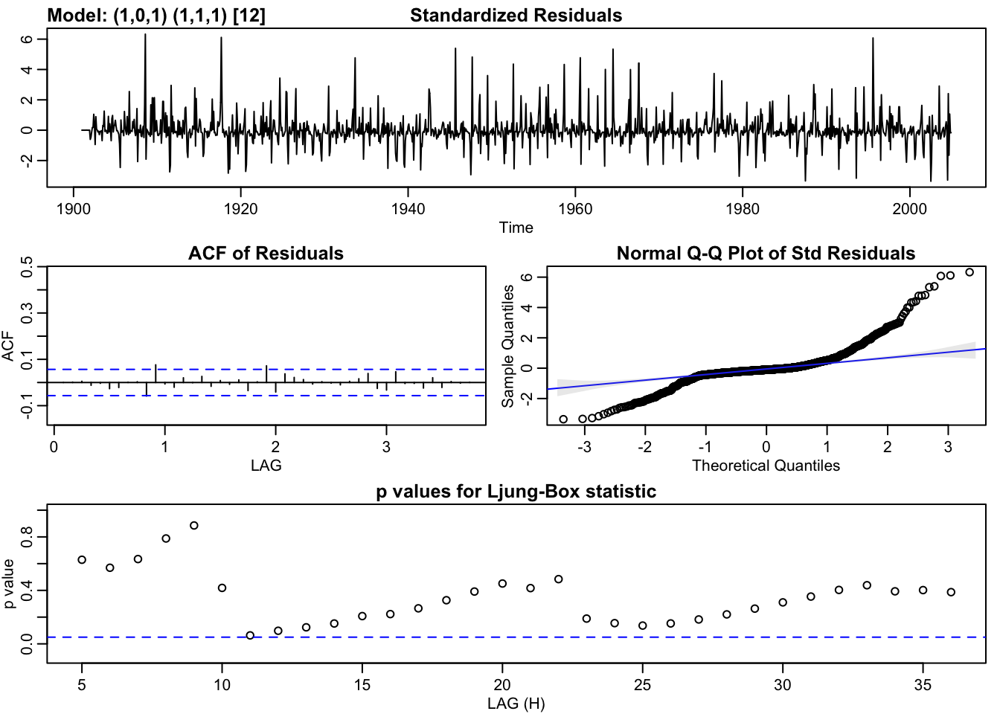
model_2 <- sarima(rainbymonth, 0,0,0,2,1,0,12)## initial value 4.070425
## iter 2 value 3.927099
## iter 3 value 3.874484
## iter 4 value 3.871906
## iter 5 value 3.871527
## iter 6 value 3.871527
## iter 6 value 3.871527
## iter 6 value 3.871527
## final value 3.871527
## converged
## initial value 3.866630
## iter 2 value 3.866613
## iter 3 value 3.866612
## iter 3 value 3.866612
## iter 3 value 3.866612
## final value 3.866612
## converged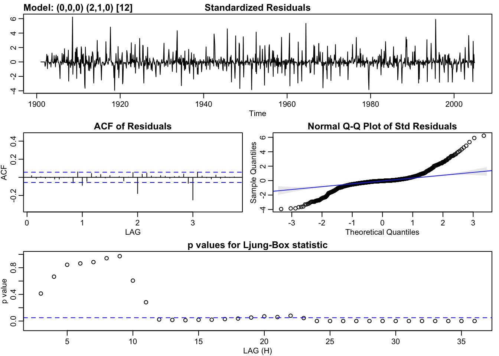
model_1## $fit
##
## Call:
## stats::arima(x = xdata, order = c(p, d, q), seasonal = list(order = c(P, D,
## Q), period = S), xreg = constant, transform.pars = trans, fixed = fixed,
## optim.control = list(trace = trc, REPORT = 1, reltol = tol))
##
## Coefficients:
## ar1 ma1 sar1 sma1 constant
## -0.1324 0.1768 -0.0272 -0.9758 0.0023
## s.e. 0.8471 0.8421 0.0296 0.0111 0.0041
##
## sigma^2 estimated as 1687: log likelihood = -6364.61, aic = 12741.22
##
## $degrees_of_freedom
## [1] 1231
##
## $ttable
## Estimate SE t.value p.value
## ar1 -0.1324 0.8471 -0.1563 0.8758
## ma1 0.1768 0.8421 0.2100 0.8337
## sar1 -0.0272 0.0296 -0.9198 0.3579
## sma1 -0.9758 0.0111 -88.1313 0.0000
## constant 0.0023 0.0041 0.5477 0.5840
##
## $AIC
## [1] 10.2175
##
## $AICc
## [1] 10.21754
##
## $BIC
## [1] 10.24213model_2## $fit
##
## Call:
## stats::arima(x = xdata, order = c(p, d, q), seasonal = list(order = c(P, D,
## Q), period = S), xreg = constant, transform.pars = trans, fixed = fixed,
## optim.control = list(trace = trc, REPORT = 1, reltol = tol))
##
## Coefficients:
## sar1 sar2 constant
## -0.6578 -0.3339 0.0064
## s.e. 0.0269 0.0270 0.0571
##
## sigma^2 estimated as 2272: log likelihood = -6532.94, aic = 13073.88
##
## $degrees_of_freedom
## [1] 1233
##
## $ttable
## Estimate SE t.value p.value
## sar1 -0.6578 0.0269 -24.4354 0.0000
## sar2 -0.3339 0.0270 -12.3630 0.0000
## constant 0.0064 0.0571 0.1119 0.9109
##
## $AIC
## [1] 10.48427
##
## $AICc
## [1] 10.48428
##
## $BIC
## [1] 10.50069auto.arima(rainbymonth, trace=TRUE, seasonal = TRUE)##
## Fitting models using approximations to speed things up...
##
## ARIMA(2,0,2)(1,1,1)[12] with drift : Inf
## ARIMA(0,0,0)(0,1,0)[12] with drift : 13457.89
## ARIMA(1,0,0)(1,1,0)[12] with drift : 13125.87
## ARIMA(0,0,1)(0,1,1)[12] with drift : Inf
## ARIMA(0,0,0)(0,1,0)[12] : 13455.89
## ARIMA(1,0,0)(0,1,0)[12] with drift : 13459.85
## ARIMA(1,0,0)(2,1,0)[12] with drift : 12991.15
## ARIMA(1,0,0)(2,1,1)[12] with drift : Inf
## ARIMA(1,0,0)(1,1,1)[12] with drift : Inf
## ARIMA(0,0,0)(2,1,0)[12] with drift : 12988.55
## ARIMA(0,0,0)(1,1,0)[12] with drift : 13122.86
## ARIMA(0,0,0)(2,1,1)[12] with drift : Inf
## ARIMA(0,0,0)(1,1,1)[12] with drift : Inf
## ARIMA(0,0,1)(2,1,0)[12] with drift : 12990.16
## ARIMA(1,0,1)(2,1,0)[12] with drift : 12993.16
## ARIMA(0,0,0)(2,1,0)[12] : 12986.55
## ARIMA(0,0,0)(1,1,0)[12] : 13120.86
## ARIMA(0,0,0)(2,1,1)[12] : Inf
## ARIMA(0,0,0)(1,1,1)[12] : Inf
## ARIMA(1,0,0)(2,1,0)[12] : 12989.14
## ARIMA(0,0,1)(2,1,0)[12] : 12988.15
## ARIMA(1,0,1)(2,1,0)[12] : 12991.15
##
## Now re-fitting the best model(s) without approximations...
##
## ARIMA(0,0,0)(2,1,0)[12] : 13071.91
##
## Best model: ARIMA(0,0,0)(2,1,0)[12]## Series: rainbymonth
## ARIMA(0,0,0)(2,1,0)[12]
##
## Coefficients:
## sar1 sar2
## -0.6578 -0.3339
## s.e. 0.0269 0.0270
##
## sigma^2 estimated as 2275: log likelihood=-6532.95
## AIC=13071.89 AICc=13071.91 BIC=13087.25##predicting
prediction_1 <- sarima.for(rainbymonth, 132,1,0,1,1,1,1,12)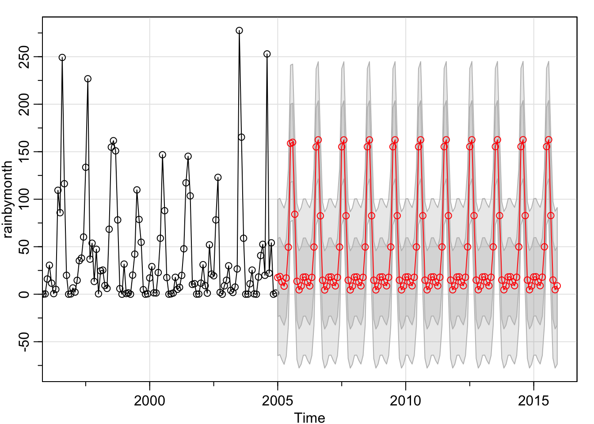
prediction_2 <- sarima.for(rainbymonth, 132,0,0,0,2,1,0,12)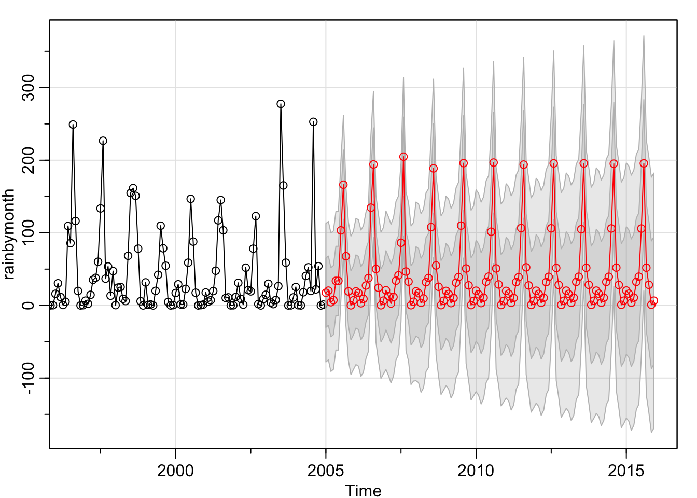
library(forecast)
#fit <- auto.arima(rainbymonth,max.p = 5,max.q = 5,max.P = 5,max.Q = 5,max.d = 3,seasonal = TRUE,ic = 'aicc')
#plot(forecast(fit,h=20))
#hist(fit$residuals)A fitted model should be subjected to diagnostic checking with a view to ascertaining its goodness-of-fit to the data. This is done by analysing its residuals. An adequate model should have uncorrelated residuals. This is the minimal condition. The optimal condition is that the residuals should follow a Gaussian distribution with mean zero. The residuals resemble white noise which is a good indication.
Now I plot the actual values predictied from 1901 - 2004 for 2005-2015 against the actual data of 2005-2015.
format <- function(x) {
temp <- unlist(as.list(t(as.matrix(x))))
temp <- as.data.table(temp)
temp$time <- 1:nrow(temp)
return(temp)
}
predict_1 <-format(prediction_1$pred)
predict_2 <- format(prediction_2$pred)
raincheck <- format(raincheck)
##prediction frame:
predict_1$se <- unlist(as.list(t(as.matrix(prediction_1$pred))))
predict_1$lower <- predict_1$temp - 1.96*predict_1$se
predict_1$upper <- predict_1$temp + 1.96*predict_1$se
ggplot() +
geom_line(data = predict_1,aes(x=time,y = temp, colour = "model1")) +
geom_line(data = predict_2,aes(x=time,y = temp, colour = "model2")) +
geom_line(data = raincheck,aes(x=time,y = temp, colour = "truth")) +
scale_colour_manual("",
breaks = c("model1","model2","truth"),
values = c("red", "green", "blue")) +
geom_ribbon(data=predict_1,aes(x = time,ymin=lower,ymax=upper),alpha=0.3) +
labs(title="Prediction v Truth with 95% confidence bands") +
theme_classic()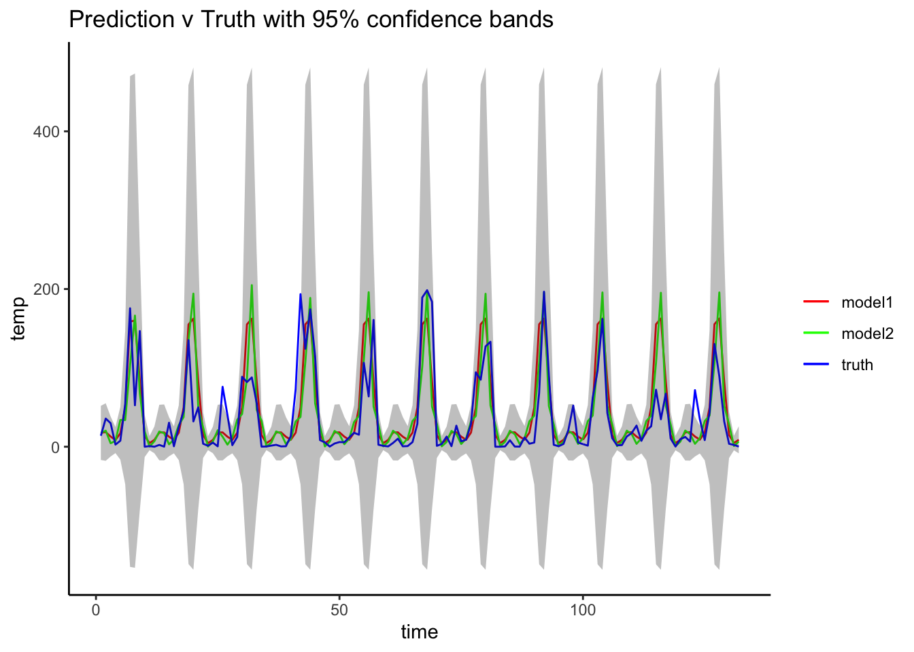
The predictions seem not too far from the truth, and within the confidence intervals. The AIC’s for the SARIMA models are almost identical.
Conclusion:
Rainfall in Delhi is highly seasonal, with peak during July and June.
There is no ascertainable overall monotonic trend in the data.
Series can be made sufficiently stationary by subtracting the seasonal component, and by differencing (degree 1) over a frequency of 12 months.
SARIMA models are adequate in predicting weather forecasts.